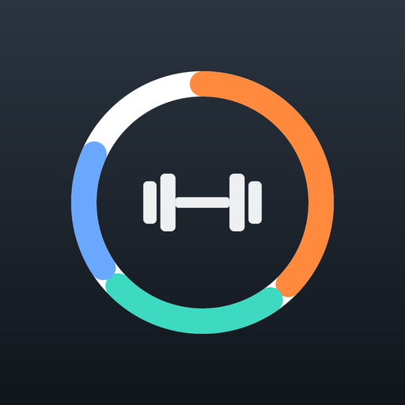
Introducing the new Logbook
Your whole day.
One home screen.
Training, food, sleep and progress live together in widgets you arrange yourself. Glance, tap, log, done.
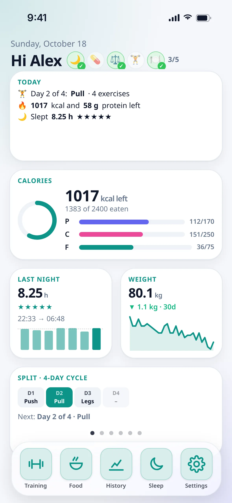
Widget home
Everything that matters,
before you even tap.
Today's plan, calories left, last night's sleep, your weight trend and your split cycle, all on one screen. Add, remove and rearrange widgets until it feels like yours.
- A daily checklist right next to your name
- Live calorie and macro rings
- Sleep, weight and streak widgets
Swipe pager
Swipe between pages,
just like your phone.
Spread your widgets across pages and flick between them. The dock stays put, so your apps are always one tap away.
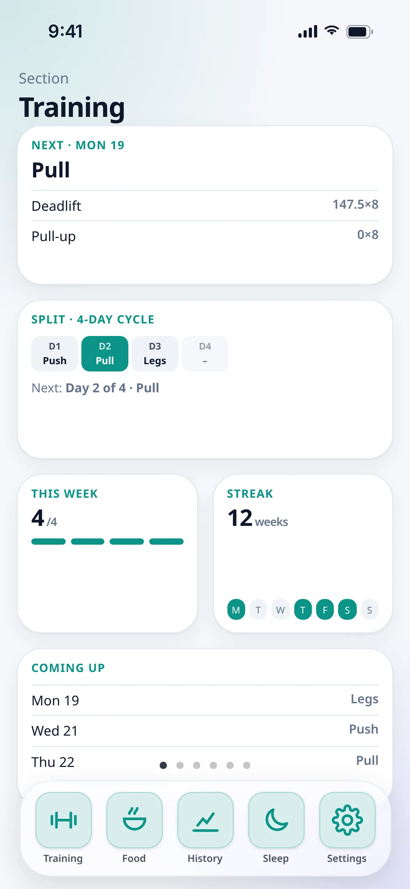
Dock apps
Tap an app.
Watch it open.
Training, Food, History, Sleep and Settings sit in the dock. Each one grows out of its icon into a full app, then shrinks back when you're done.
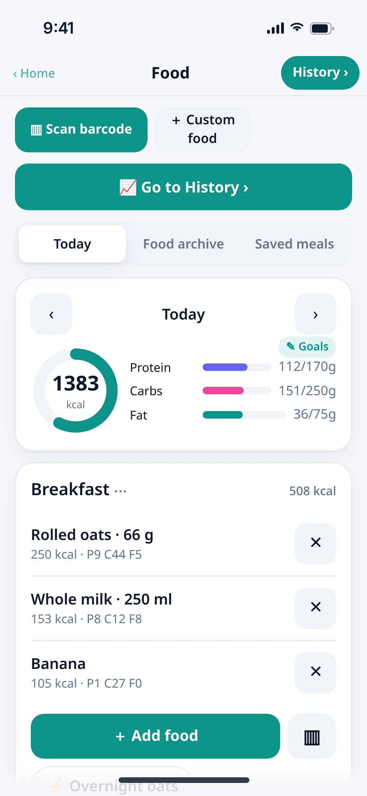
Mini apps
Widgets that open
into mini apps.
Tap the calorie widget and you get the full story: how much is left today, plus 7, 30 and 90-day charts against your goals.
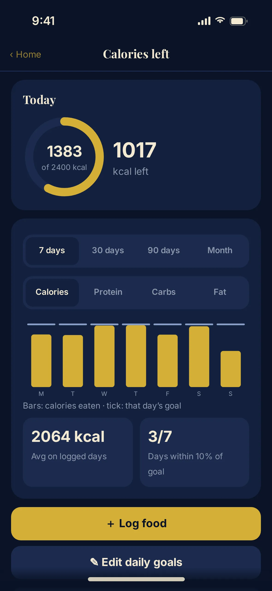
Colourways
Twelve looks. Light, dark or auto.
From Logbook Teal to Midnight Navy and Electric Violet, each colourway comes with its own type pairing.
Training
Plan it. Lift it. Log it.
A rotating split that knows what's next, quick set logging with notes on every session and exercise, and a library of more than a hundred exercises.
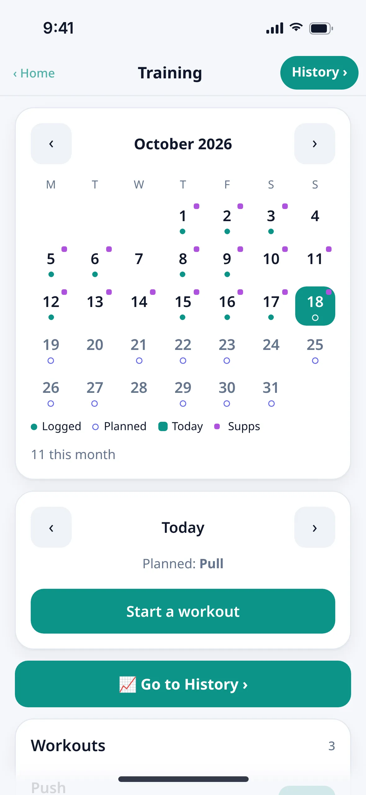
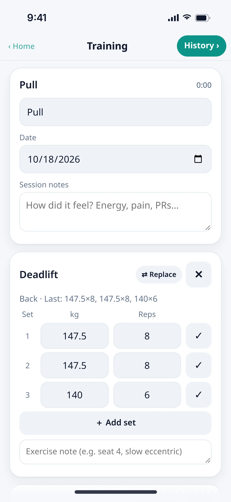
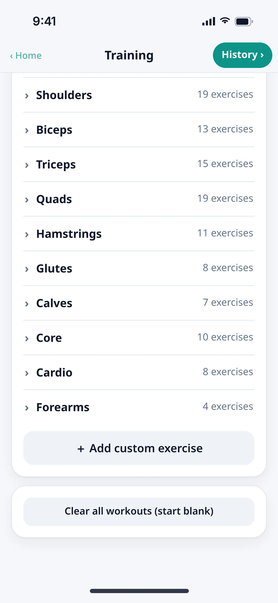
Food
Log food the way you actually eat it.
Count a banana as one whole item. Weigh chicken in grams or pour milk in millilitres. Scan a barcode, save your go-to meals and name meal slots however you like.

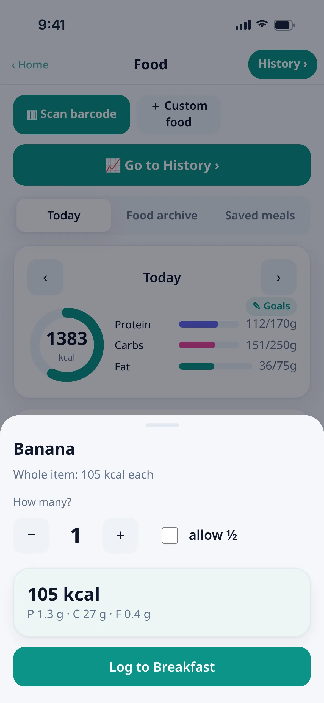
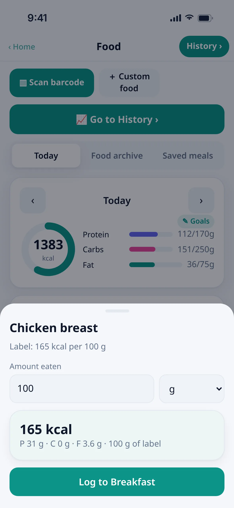
History
See progress, not just numbers.
Estimated 1RM trends and weekly volume. Calories and every macro over 7, 30 or 90 days, each measured against the goal you had that day. A month view shows which days hit the mark.
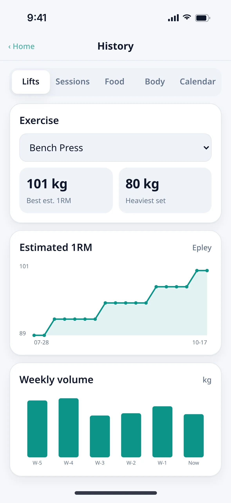
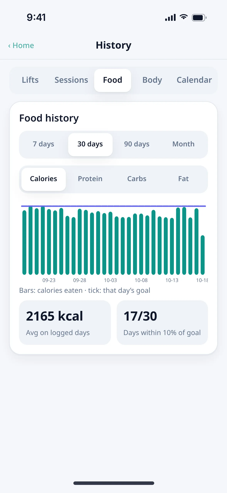
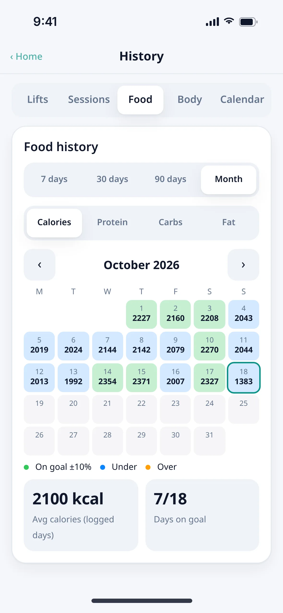
Sync
On every device.
Even offline.
Sign in with Google or email and your log follows you. Everything saves to your phone first, so it works offline and catches up the moment you're back online.
- Works fully without an account
- Changes merge automatically across devices
- Your data stays private to your account
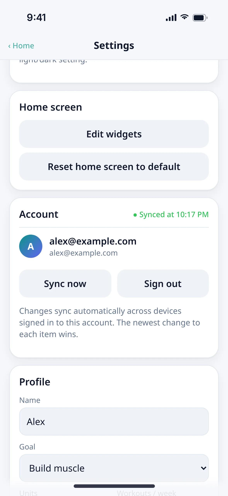
Your day, on one screen.
Open the live preview on your iPhone, tap Share, then Add to Home Screen.
Open the live preview